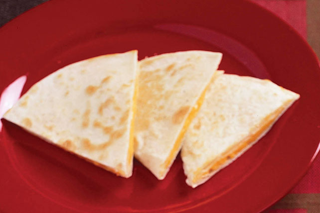

Quesadillas

A quick and tasty comfort food of tortillas with melted cheese inside.
Quesadillas can be made with either flour or corn tortillas. I personally think that flour tortilla quesadillas taste better as the tortilla compliments the fatty flavors of many kinds of cheese. Usually soft white cheeses are used but any cheese that melts well can be used. I personally use mozarella or monterrey jack cheese.
Ingredients
- cheese that melts well (monterrey Jack, mozarella, shredded cheddar, etc)
- tortilla of your choice
- optional: additional things you may want to put inside your quesadilla such as shredded meat, salsa, or hot sauce
Directions
- Shredd your cheese or cut into smaller pieces so that it can melt more easily.
- Head the tortilla in a pan so that it warms up.
- When the tortilla is warm enough, fill with cheese and then fold over to create a taco shape. Return to the pan
- Check on the inside of your quesadilla and flip sides so that the heat is distributed evenly. When the cheese is melted to the degree you like, plate it.
- If adding anything else inside, open the quesadilla and add what you desire.
- Enjoy!